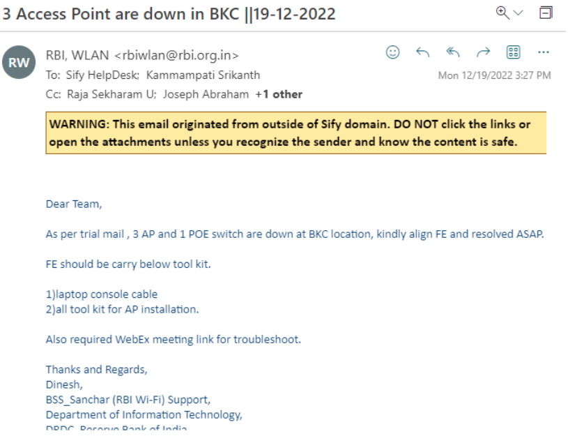
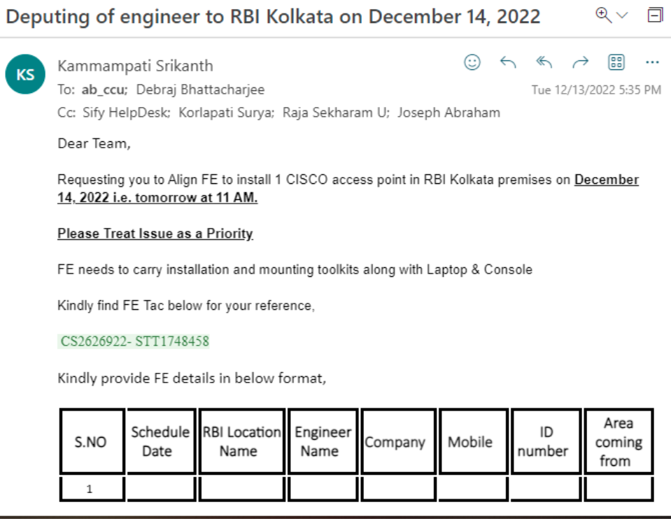
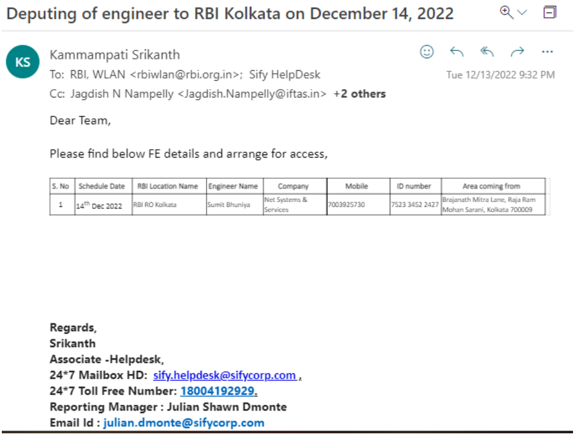

We have sold some networking hardware parts like Routers, Switches, IP Phones from Cisco, HP, Radware to Customers.
Helpdesk needs to support the Customers in case of any Hardware failures like Raising RMA, Installing New Parts, configuring it, raising pick up request or any other issues related to hardware devices.
Firstly we need to check the Expiry date of RMA if the device is under validity
We need to raise a request to the concern Companies for RMA against faulty devices with required details like Serial Number, Model Number, Issue Description, site address, Local contact details etc.
For Cisco we have to drop ac:\Users\navee\AppData\Local\Programs\Microsoft VS Code\resources\app\out\vs\code\electron-sandbox\workbench\workbench.html mail to (Tac@cisco.com)
For HP Devices we have to call tollfree number to raise tac (18004194994)
For Radware Devices we have to call tollfree number to raise tac (0008003201489)
Mail Template:
Dear Cisco,
Kindly note that the cisco router is not powering up. Hence, we are requesting you to please raise a cisco TAC for RMA
Company Name : NATIONAL INSURANCE COMPANY LIMITED
Router Model : ISR4321/k9
Router Serial : FDO2104A41C
Problem : Not powering up
Cisco user Id (CCOID) : Arun. Surendran1
Contact : Shri Ravindranath K @ 7 799906259// Ph: 08472-223833
Address : Mini Vidhana Soudha, Gulbarga, Karnataka-585101, India
Mail Id : nic.noc2@nic.co.in
GST No : 29AAACN9967E1ZZ
After raising RMA, cisco team will share a link with RMA no. to submit the local contact details, site address and GST details. Post submitting those details, they’ll share new part estimate time for arrival, we can also track the product with the same link.
Sample link : https://ibpm.cisco.com/rma/home/?OrderNumber=802116906
Login credentials for completing the RMA
Username: helpdesk@sifycorp.com
Password: Sify@1234
After the new part is delivered, we need to raise a field tac and send our engineer to install new part. Please find below SS of completing RMA:
For other company parts they’ll take faulty device while delivering the new part. For cisco parts we need to raise pick up request to send the faulty device to the company.
To raise a pickup request, we need to login to cisco portal, download the delivery challan and fill those mandatory fields.
Login will be done by providing RMA no, mail id (arun.surendran@sifycorp.com) and captcha.
Requester details:
Arun Surendran
Arun.surendran@sifycorp.com
+91 9600007389
We will receive a mail from RBI Team as they are facing Hardware issues such as Access point down, Switch gone faulty

Step 1: We have to check the mail clearly whether it is an Access point outage or POE Switch Issue.
Step 2: We have to create without link id ticket and create a Field Tac and it has to be assigned to respective teams.
Step 3: For Example, if the issue is at Kolkata, we need to drop a mail to ab_ccu by looping our internal team in CC
Step 4: We need to Coordinate with regional teams to arrange FE

Once we receive details from regional team need to share with RBI Team to arrange gate pass

Step 5: On the day of activity, we need to coordinate with FE whether he approach the location and need to Coordinate with local Re to allow FE inside the site
Step 6: Once FE got access, he will start working on the given issue if AP is down, he will perform basic trouble shoot and he will check by changing the cables
Step 7: If Ap or Poe Switch gone faulty we have to raise an RMA with Cisco Team
Step 8: Once we get the new device again, we need to send FE for configuration, we need to create a Webex meeting with RBI Team and FE at the site, FE will plug in the console and RBI team will take the control of the system and they configure
Step 9: Once the configuration is done, we need to check with local RE whether the Services are up and working fine then we can relieve FE
In some scenarios we will get a mail from customer as he wants to upgrade his device with the help of Sify as we are the direct point of contact to customers as we sold the devices
For example, devices like Cisco, Radware and HP some customers want to change its versions
Step 1: When we receive a mail from customer firstly, we need to cross verify which device he is using
Step 2: We need to note the device details like device name, serial number, Model Number, Current version, OEM (Original end manufacturer) details
Step 3: we need to check with the respective Companies whether the customer device is under warranty
Step 4: If the device is under warranty, we must raise a FE tac and need to assign FE at customer location with required kits
Step - 5: In between we need to coordinate with respective company for assistance
For Cisco we must drop a mail to (Tac@cisco.com)
For HP Devices we must call tollfree number to raise tac (18004194994)
For Radware Devices we must call tollfree number to raise tac (0008003201489)
If a customer is using Radware Alteon device we need to call to the tollfree number and we must raise a tac, we will receive a case id and engineer will be assigned on the upgradation
Radware team will give online assistance to our FE who is visiting the site
Firstly, Radware team will provide POA (plan of action) to customer and they will provide downtime and new upgrade version with conformation of customer they will schedule a meeting
Step 6: On the scheduled date confirmed by Customer and Radware team we need to send Fe at customer site
Step 7: On the scheduled date confirmed by Customer and Radware team we need to send Fe at customer site
Step 8: This is how we can help the customers with upgradation of devices
Scenarios: Cisco Firewall upgrade, Radware Alteon device upgrade etc.
Step 1: Customers will buy Networking parts with Sify we will provide OEM to the customers
Step 2: It will have Validity of one year and two years based on customer subscription
Step 3: From our side Account manager is the lead for OEM Details under every Account manager there will be a sales team
Step 4: Sales take care of OEM details and purchases from Companies like Cisco, HP,Huawei,..etc.
Step 5: Sales team will provide those details to customers and done with agreement based on Customers Subscription
Step 6: In the time of expiry Companies will call to our sales team as we are the first point of contact, and they intimate as OEM is going to expire it only has one month validity
Step 7: our sales team will communicate the same to customer as he has only one month left under OEM
Step 8: If customer wants to continue partnership with us, he will renew with the help of Sales team
Step 9: If he is not interested in Renewal, he ends the Contract with us
In TIS to onboard a new customer firstly we need to take basic details and it must be forwarded with service now team